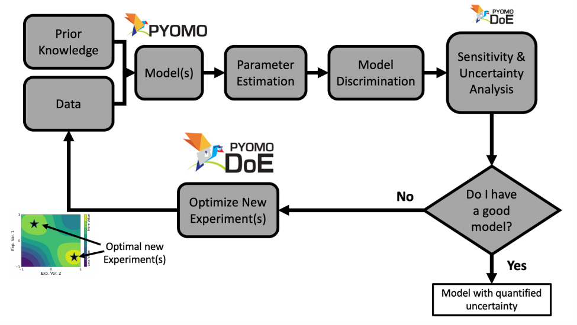

Optimizing Experiments with Pyomo.DoE#
Welcome to the interaction tutorial workshop for parameter estimation and model-based design of experiments in the Pyomo ecosystem!

These materials were created by Prof. Alexander Dowling at the University of Notre Dame. Special thanks to Prof. Jeff Kantor, Maddie Watson, Molly Dougher, and Hailey Lynch for assistance with the TCLab models and activities. Pyomo.DoE was developed by Jialu Wang and Alexander Dowling with assistance from John Siirola, Bethany Nicholson, Miranda Mundt, Hailey Lynch, and Dan Laky. Pyomo.DoE was refactored over the summer of 2024 by Dan Laky and Prof. Alexander Dowling, who both also updated the workshop materials to coincide with the refactored versions of both Pyomo.DoE and parmest.
American Control Conference (ACC) 2026 Workshop#
Model Building and Digital Twin Construction using Pyomo.DoE, a Pythonic Tool for Optimal Experimental Design
Digital twins rely on high-quality data to achieve predictive capability, yet experiments are often expensive and constrained. Optimal experimental design (OED) provides a principled framework for selecting experiments that maximally reduce model uncertainty, and can be naturally posed as an optimal control problem constrained by dynamic system models and experimental limitations. This workshop introduces Pyomo.DoE, an open-source, Python-based, equation-oriented framework for model building and optimal experimental design within the Pyomo modeling ecosystem. Participants will learn how classical information-based design criteria—including D-, A-, E-, and ME-optimality derived from the Fisher Information Matrix—can be embedded in nonlinear dynamic optimization problems and solved using modern numerical optimization tools. The formulation treats experimental inputs (e.g., control trajectories, sampling times, operating conditions) as decision variables in an optimal control problem that explicitly balances information gain and experimental feasibility.
The workshop will begin with a brief introduction to algebraic modeling and dynamic optimization in Pyomo, followed by a hands-on workflow for parameter estimation, uncertainty quantification, and optimal experiment design. Through interactive examples, participants will construct predictive models, design informative experiments, and explore how different optimality criteria target distinct sources of uncertainty.
This workshop is intended for researchers and practitioners interested in digital twins, system identification, and model-based experiment design. The workshop highlights how modern computational optimization tools enables scalable, rigorous, and automated experimental design for complex dynamic systems.
We are scheduled for a half-day afternoon workshop on Tuesday, May 26, 2026. The schedule below assumes a 1pm start time and will be updated once the conference schedule is finalized.
Time |
Topic |
|---|---|
1:00 pm |
Welcome and Overview |
1:15 pm |
Dynamic Modeling and Optimization in Pyomo |
Hands-on Examples |
|
2:00 pm |
Break |
2:15 pm |
Parameter Estimation |
Hands-on Examples |
|
3:15 pm |
Break |
3:30 pm |
Optimal Experiment Design |
Hands-on Examples |
|
4:45 pm |
Adjourn |
What will I learn in this workshop?#
In this workshop, we will learn how to develop digital twin models in the open-source Pyomo ecosystem. Specifically, we will learn how to use three Pyomo-based toolkits:
pyomo.daefor modeling and discretization of (partial) differential algebriac equations to facilitate dynamic optimizationParmEstfor parameter estimation and uncertainty quantificationPyomo.DoEfor model-based design of experiments
What do I need to complete the tutorial?#
This tutorial assumes the audience is familiar with basic Python programming. (New to Python? Check out this and similar online resources.) The tutorial is designed to run in Google Colab. The tclab_pyomo.py file contains the Pyomo model for our motivating system as well as utilities to install software on Colab.
Alternatively, pariticipants can run the tutorial locally on their computer. Use the following command to create a new conda environment:
conda create -n summer2026 -c conda-forge -c IDAES-PSE python=3.11 idaes-pse pandas numpy matplotlib scipy ipykernel
Then install the optimization solvers, including Ipopt with HSL linear algebra and k_aug:
idaes get-extensions
Note: k_aug is not distributed for macOS users with an Intel processor. Instead, you will either need to compile yourself or skip a few sections of the tutorial. k_aug is an optional dependency for Pyomo.DoE.
Next, download the files for this tutorial:
git clone git@github.com:dowlinglab/pyomo-doe.git
How do I learn more about Pyomo.DoE?#
The Pyomo.DoE documentation is a great information and a different set of examples. Also see our tutorial notebook for the reaction kinetics example.
If you use Pyomo.DoE, please cite our paper:
Pyomo.DoE paper
Wang and Dowling, 2022. Pyomo.DoE: An open-source package for model-based design of experiments in Python. AIChE Journal, 68(12), e17813. https://doi.org/10.1002/aic.17813
New to Pyomo? Check out these great resources:
Past Tutorials#
European Symposium on Computer Aided Process Engineering and International Symposium on Process Systems Engineering: